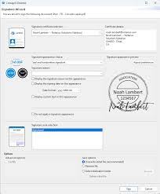

1. GIDEON-UNIVERSITY campus is ranked as one of the most beautiful campuses in the USA.
2. Our art on campus collection has over 2500 public artwork.
3. GIDEON-UNIVERSITY provides loan for undergraduate.
4. GIDEON-UNIVERSITY provides career training for home and international students.
5. GIDEON-UNIVERSITY has a wonderful view to students around.

.jpg)
.jpg)
1. We encourage students and families to start with savings.
2. We grants scholarship and federal students loan to pay for college.
3. students and families should evaluate all anticipated monthly loan payment.
4. We evaluate how much the students expects to earn in the future.
5. We consider a private students loan.
.jpg)
.jpg)
1. Students must attend a participating school.
2. Students or cosigner must meet the age of majority in their state or residence.
3. Students who are not USA citizens must attend school in the USA.
4. Requested loan amounts should be at least $1000.
5. Students should submit their identity verification,signed loan documents,and school certificate.
.jpg)
1. GIDEON-UNIVERSITY offers some of the largest career fairs in the nation with over 2000 companies.
2. GIDEON-UNIVERSITY has many opportunities for students to connect with employers about internships.
3. GIDEON-UNIVERSITY Co-ops, and other jobs opportunities.
4. GIDEON-UNIVERSITY has about 95% placement rate for international students.
5. GIDEON-UNIVERSITY students go on careers or graduate schools of their choosing.
.jpg)
.jpg)
We do offer sporting activities to students
We do go out for excursion to different countries.
.jpg)
.jpg)
.jpg)